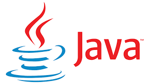

This Platform provides you the necessary resources related to Coding. So, when we speak about Coding, we mainly focus on Programming Languages . Basic Programming Languages like C/C++,JAVA , Python etc.. are used in the Industry, based on their requirement we need to have thorough Knowledge about these Languages in order to work with them for building an Application.
As a beginner we need to first learn the most Fundamental Programming that is C Programming. Now many people may not agree with this, but the reason behind why we advised C is because,for building any Application, we need to understand what is happening internally(memory),or how does the code work, why does it work like this , why not that way ,why not this way...All these questions have got some insights and to answer them C Programming is here...
It is also known as Procedural Language, as the code that we write is simple. Until and unless we don't understand the Syntax of C Programming, we cannot dive directly into JAVA, as the basic concepts used in C Programming are used here also.
So now it's an ERA of AI but still, the logic building is the basics of C Programming, which needs to be understood or learnt by the Students.There are Different Domains Like Aritficical Intelligence,MachineLearning, Computer Networks, Web Development, App Development, Operating System. ML is a part of Artifical Intelligence as it is most Interesting topic for this ERA. And Web Development refers to building a website , and maintaining it . Whereas App Development refers to Building an App , which written in JAVA mostly. As JAVA provides the best Environment and Interface.Coming on to Operating System is written exclusively written in C, as OS requires low level language for it Faster execution of the Code.